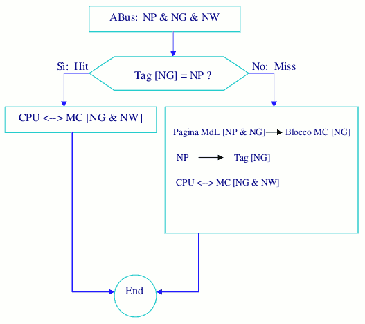

Torna alla pagina di Architettura degli elaboratori
Questa pagina è stata aggiornata GRAZIE agli appunti che AVETE INVIATO nel periodo di chiusura della sezione UniCrema!! È SERVITA A QUALCOSA, NO?! ;)
:: Architettura degli elaboratori - Gestore della cache ::
|
Verifica che nella cella della colonna Se sì: La CPU vuole leggere in una zona potenzialmente calda, quindi devo prendere quella parte della memoria e copiarla nella cache. Prendo la pagina della MdL di indirizzo NP&NG e la porto nel blocco MC in posizione NG. |  |
Devo ricordarmi che nella cache c'è qualcosa di diverso e quindi il NP del gruppo lo devo andare a scrivere nella memoria cache nel tag di NG, per dire che non è più quella di prima ma è un'altra pagina di quel gruppo quella presente nella cache.
Vi è però 1 problema: devo sapere se la CPU vuole accedere a memoria per leggere o per scrivere.
Per risolvere questo problema, vi sono 2 soluzioni:
Nel caso dello Store thru ogni volta che apporto modifiche ad una cella della cache, modifico anche la corrispondente cella nella MdL.
Vantaggio: l’originale e la copia rimangono allineati, quindi nel momento in cui vado a inserire nella cache un diverso blocco di indirizzi, posso sovrascrivere la copia, in quanto l’originale è già stato aggiornato. Svantaggio: le scritture sono lente. Considerando, però, che le fasi di fetch sono tutte letture e che le elaborazioni di dati sono quasi sempre sintesi (da tanti valori di ingresso produco pochi valori in uscita), posso anche accettare tali rallentamenti.
Nel caso invece dello Store in associo ad ogni blocco caricato nella cache un bit che, se è settato su 0 significa che non ho apportato modifiche e quindi nel caso devo cancellarlo dalla cache non mi pongo problemi, viceversa, se è settato su 1 significa che è stato modificato e, quindi, aggiorno la MdL nel momento in cui lo voglio cancellare per mettercene un altro.
A questo punto però mi si pone un problema: se ho delle istruzioni che fanno riferimento a dei dati che fanno parte dello stesso gruppo, ma di un’altra pagina, nella cache non ho la possibilità di caricare tutti e due i blocchi di indirizzi (pagine).
La soluzione ideale sarebbe quindi avere nella cache le pagine di MdL più richieste,
indipendentemente dal gruppo cui fanno parte. Quindi elimino i gruppi, portando i tag da 5 a 12 bit. Di conseguenza non vi è più accoppiamento prestabilito fra alcune zone di memoria cache e MdL, ma ogni pagina di MdL può andare in qualsiasi pagina di cache e quindi l’indirizzo generato dalla CPU viene diviso dal Gestore di Cache in NP & NW. Qualora la cache contenesse 128 pagine, non vi saranno più quindi 32 indirizzi possibili per identificare la pagina, bensì 4095.